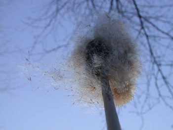
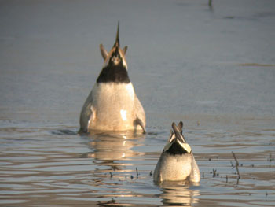
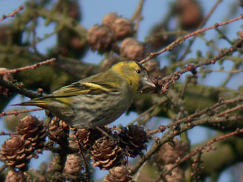

Vroeg gebeten
zaterdag 22 februari 2003 | Persoonlijk
Ik werd deze morgen gewekt door een eigenaardig geluid dat door de gordijnen drong. Ik herkende het niet onmiddellijk, omdat ik het hier nog nooit eerder had gehoord, maar opeens was het overduidelijk. Dat was het gekwetter van een bende sijsjes! Meteen mijn tele en digicam bovengehaald en in mijn onderbroek vanop het terras beginnen fotograferen. Na een weekdosis coolerfan-geruis raakt een mens al eens vervreemd van wat Moeder Natuur rond hem allemaal uitspookt. En toen ik daar zo stond, de heldere vrieslucht inademend, gingen als bij toverslag mijn ogen open! Hier zit lente in de lucht! Ik zag de witte kopjes van de sneeuwklokjes, het uitzaaien van de lisdodde, een baltsend koppeltje sperwers, maar bovenal hoorde ik overal om me heen het onmiskenbare geluid van de eerste aarzelende aanzet tot het grote vogelconcert dat we binnen enkele weken mogen verwachten. Heerlijk! Als je de partituur ervan kent, is het nog leuker! Wist je bijvoorbeeld dat je in de aanloop naar de zomer de zang van eerstejaars-lijsters gradueel kan horen verbeteren? Ze herinneren de zang van hun ouders het jaar ervoor en doen hun uiterste best om die zo goed en kwaad het kan te imiteren. Rond deze periode klinkt dat nog bijzonder grappig. Deze middag heb ik de Bourgoyen in Gent nog eens aangedaan. Dat was te lang geleden. Smienten, wintertalingen, slobeenden, pijlstaarten, … ze lieten zich allemaal gewillig keuren in het gouden zonlicht.



Julie op 22 februari 2003
Kan je mijn kontje ook zo mooi fotograferen aub? Magnifique ‘poepfoto’, tis er eentje voor in de boekskes. Echt waar!!